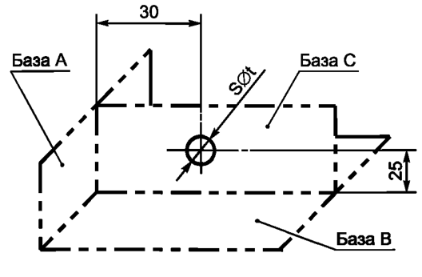
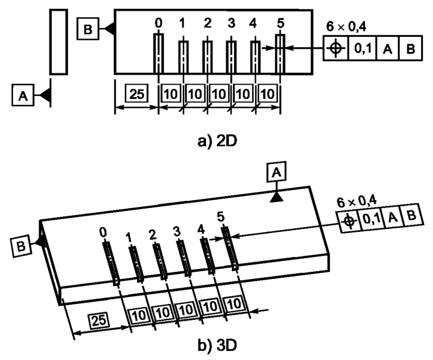
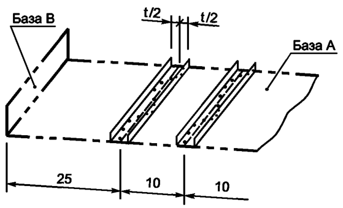
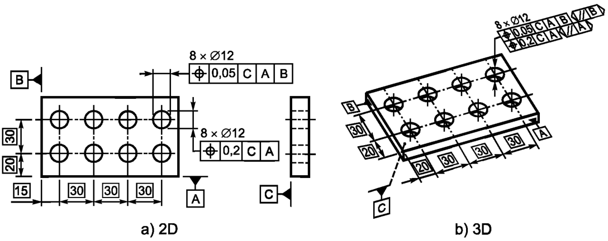
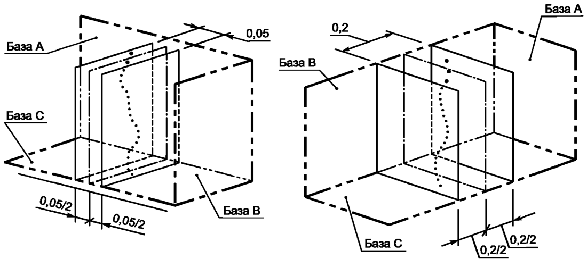
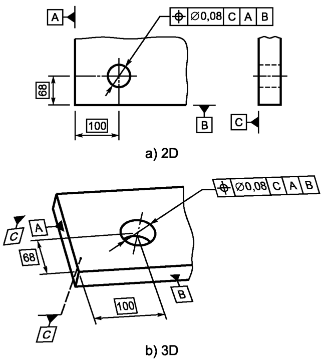
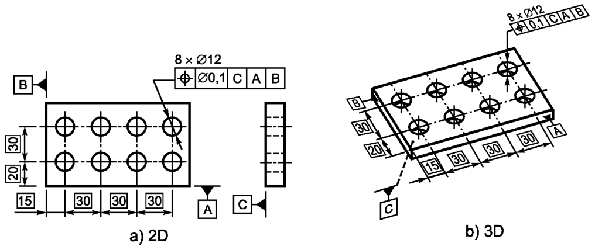
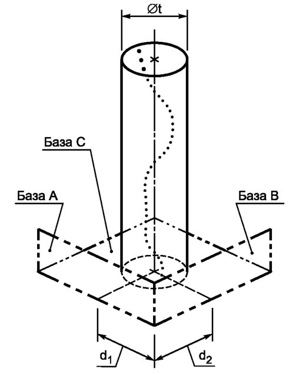
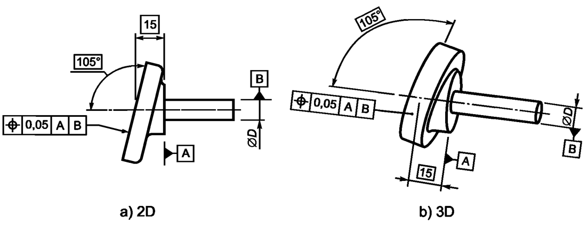
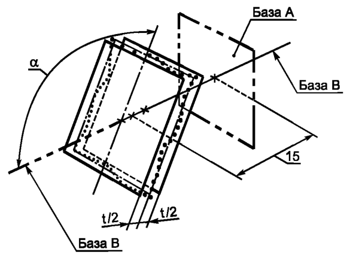

Выявленный центр сферы должен располагаться внутри сферы диаметром 0,3 мм, центр которой совпадает с указанным относительно базовых плоскостей А, В и базовой средней плоскости С теоретически точным положением центра сферы, см. рисунок ниже
Примечание - Определение выявленного центра сферы нестандартизовано
Поле допуска ограничено сферой, диаметр которой равен значению допуска t (если перед ним указан знак «ф»). Положение центра сферы определяется относительно баз А, В и С заданными теоретически точными размерами, см. рисунок ниже
Выявленная средняя линия каждого из 6-ти штрихов линейки должна находиться между двумя расположенными симметрично относительно соответствующей осевой линии параллельными плоскостями, расстояние между которыми 0,1. Положение осевых линий задано теоретически точными размерами относительно базовых плоскостей А и В, см. рисунок ниже
Каждое поле допуска ограничено двумя расположенными симметрично относительно осевой линии параллельными плоскостями, расстояние между которыми равно числовому значению допуска t. Положение осевой линии относительно баз А и В определяют теоретически точные размеры. Допуск является однонаправленным, см. рисунок ниже
Выявленная средняя линия каждого из 8-ми отверстий должна быть расположена между двумя парами параллельных плоскостей, расстояния между плоскостями в которых 0,05 и 0,2. Каждая пара плоскостей расположена симметрично относительно заданного теоретически точными размерами номинального положения оси соответствующего отверстия и имеет ориентацию, определяемую относительно комплекта базовых плоскостей С, А и В, см. рисунок ниже
Каждое поле допуска ограничено двумя парами параллельных плоскостей, расстояния между плоскостями в которых 0,05 и 0,2. Каждая пара плоскостей расположена симметрично относительно теоретически точного положения, заданного теоретически точными размерами относительно базовых плоскостей С, А и В, см. рисунок ниже. Допуск является двунаправленным.
Выявленная средняя линия нормируемого отверстия должна располагаться в пределах цилиндра диаметром 0,08, ось которого совпадает с теоретически точным положением оси отверстия относительно базовых плоскостей С, А и В, см. рисунок ниже
Выявленная средняя линия каждого из 8-ми нормируемых отверстий должна располагаться в пределах цилиндра диаметром 0,1, ось которого совпадает с теоретически точным положением оси соответствующего отверстия относительно базовых плоскостей С, А и В, см. рисунок ниже
Поле допуска ограничено цилиндром, диаметр которого равен значению допуска t (если перед значением указан знак«ф»). Положение оси цилиндра относительно баз С, А и В определяют теоретически точные размеры и d2, см. рисунок ниже
Выявленная поверхность должна находиться между двумя параллельными плоскостями, расстояние между которыми равно 0,05, расположенными симметрично относительно теоретически точного положения нормируемой поверхности относительно базовой плоскости А и базовой оси В, см. рисунок ниже
Поле допуска ограничено двумя параллельными плоскостями, расстояние между которыми равно значению допуска t, расположенными симметрично относительно положения, определяемого теоретически точными размерами относительно баз А и В, см. рисунок ниже

Выявленная средняя поверхность каждого паза должна находиться между двумя параллельными плоскостями, расстояние между которыми равно 0,05, расположенными симметрично относительно теоретически точного положения средней плоскости (плоскости симметрии) по отношению к базовой оси А, см. рисунок ниже
Примечание - Теоретически точные углы указаны косвенно (см. ГОСТ Р 53089)